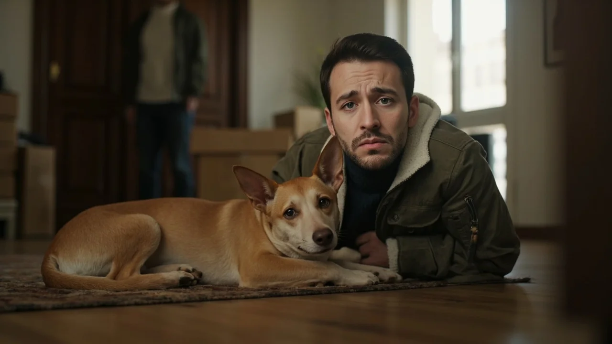
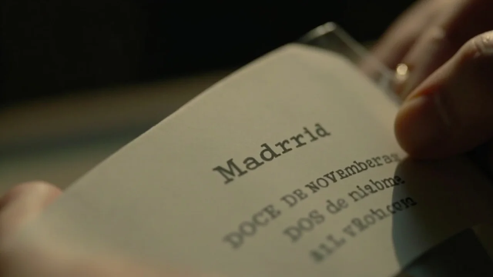
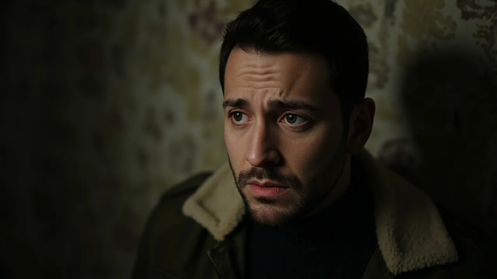
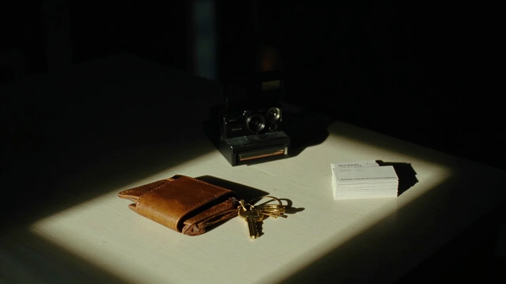
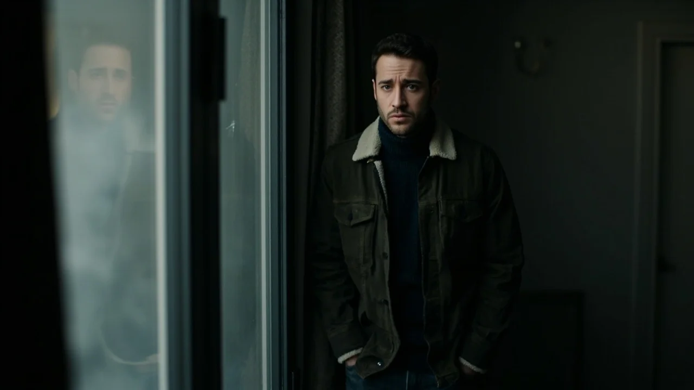

El cerrojo emitió un chasquido áspero al encajar en el marco. Álvaro apoyó la última caja en el suelo de madera y se secó el sudor de la frente. Por los ventanales del cuarto piso entraba la luz plomiza de la tarde otoñal sobre los plátanos de sombra de la calle Raimundo Lulio. Gala, su podenca canela, dio dos vueltas sobre la alfombra y se tumbó con un resoplido hondo, las orejas erguidas hacia el descansillo.
El leve tintineo de unas llaves interrumpió el silencio. La puerta vecina se entreabrió despacio, sin el menor crujido. Un hombre de unos cincuenta y cuatro años, con el pelo entrecano peinado hacia atrás y una rebeca de lana gris ceniza, se asomó sosteniendo una caja de galletas de hojalata.
—Buenas tardes, vecino —dijo el hombre con voz serena y pausada—. Disculpe el atrevimiento. Soy Marcelo, del cuarto B. He visto subir las cajas y he pensado que un poco de azúcar le vendría bien tras el esfuerzo.
Álvaro sonrió con timidez, agradeciendo el detalle.
—Muchas gracias, don Marcelo. Soy Álvaro. Me he mudado hoy mismo; aún busco la cafetera.
—Lo sé bien, las mudanzas son agotadoras —repuso Marcelo con calma—. Pero la finca es tranquila. Por cierto, qué estampa tan noble tiene Gala. A los podencos les sientan bien los paseos largos por Olavide para calmar el nervio.
Álvaro pestañeó desconcertado. En ningún momento de la tarde había pronunciado el nombre de la perra en alto. Antes de que pudiera formular la pregunta, el hombre le entregó la lata con una leve inclinación de cabeza y cerró su puerta sin hacer el menor ruido.
Durante los primeros días, las atenciones de Marcelo Varela se repitieron con una precisión asombrosa. Cada mañana, al sacar a Gala, la puerta de enfrente se abría en el segundo exacto en que Álvaro tocaba el picaporte. El vecino compartía el ascensor charlando con sobria cortesía sobre el barrio. Cuando una fuga en el sifón de la cocina inundó el bajo del fregadero, Marcelo apareció en el rellano antes de que Álvaro saliera a pedir ayuda, ofreciéndole una llave inglesa del doce envuelta en cinta roja.
—Las tuercas de plomo de estos desagües se aflojan con los cambios de presión del invierno —explicó con voz neutra—. Media vuelta a derechas y quedará estanco.
Álvaro tomó la herramienta, turbado por la mirada gris y fija del hombre. Aquella constante anticipación, que al inicio atribuyó a la rutina de un jubilado atento, empezaba a despertar en su estómago una fría incomodidad.

El martes por la noche, al revisar la correspondencia en el vestíbulo, halló entre los folletos comerciales un sobre alargado de papel amarillento, sin franqueo ni remite, con la palabra *Comunidad* mecanografiada.
Subió al piso y rasgó el borde junto a la mesa del salón. Dentro había un recorte de prensa plastificado de las páginas necrológicas de un diario madrileño. Bajo la cabecera solemne de la esquela figuraba la fotografía nítida de Marcelo Varela: la misma rebeca gris, la raya impecable al lado izquierdo y su media sonrisa fría.
El texto inferior no dejaba margen a dudas: *«Don Marcelo Varela Escudero. Falleció en su domicilio del cuarto piso B, a los cincuenta y cuatro años de edad. Sus herederos y amigos ruegan una oración por su alma. Madrid, doce de noviembre de dos mil veintitrés»*.
Álvaro releyó la fecha tres veces. El recorte tenía tres años exactos.
Amaneció con una niebla espesa que borraba las cornisas de la calle. Álvaro bajó por la escalera con el recorte en el bolsillo de su cazadora verde. En el portal encontró a Carmela, la conserje, barriendo el granito con movimientos mecánicos.
—Carmela, disculpe —dijo Álvaro con voz tensa—. Quería preguntarle por el vecino del cuarto B. Marcelo.
La escoba se detuvo en seco. Carmela levantó la cabeza despacio, mirándolo por encima de sus gafas marrones con recelo creciente.
—¿Qué clase de broma es esta, señor Beltrán? Ya le advertí que en la cuarta planta está usted solo.
—No es una broma —replicó Álvaro extendiendo el recorte plastificado—. He hablado con él varias veces. Me dio galletas, me prestó esta llave y sabe cómo se llama mi perra. Vive enfrente.
Carmela miró la fotografía y palideció de golpe. Se frotó las manos en el delantal azul y bajó la voz, mirando con aprensión hacia la escalera.

—Guarde eso. Don Marcelo murió hace tres años en ese salón. Lo halló la policía municipal tras las quejas de los vecinos por el olor. No tenía parientes y el piso está embargado en litigio judicial. La puerta sigue precintada desde entonces. Nadie ha vuelto a pisar esa casa.
—Le aseguro que la puerta se abre —insistió Álvaro, sintiendo un nudo en la garganta—. He hablado con él en el descansillo.
Carmela lo tomó del brazo con dedos huesudos.
—Subamos ahora mismo. Verá que está confundido.
Tomaron el ascensor en silencio. Al salir a la cuarta planta, la mujer señaló la puerta de enfrente.
Álvaro se quedó sin aliento.
La puerta del cuarto B estaba clausurada. Cruzando el marco colgaba una cinta blanca de precinto judicial, cubierta por una densa capa de polvo gris. La cerradura exhibía dos sellos de cera roja intactos del juzgado de instrucción. Los folletos publicitarios se acumulaban secos y aplastados contra la madera.
—¿Lo ve? —susurró Carmela con voz entrecortada—. Nadie ha tocado este pomo en tres inviernos. Si sigue oyendo cosas, señor Beltrán, márchese de aquí. Como hicieron los otros.
La conserje bajó apresurada. Álvaro se quedó solo en el rellano. Con el corazón desbocado, apoyó la oreja contra la madera precintada del cuarto B.
Al otro lado del tabique, a escasos centímetros de su rostro, sonó el roce inconfundible de una silla al deslizarse sobre el parqué y el tintineo de una taza sobre un platillo de porcelana.

Durante las noches siguientes, el piso clausurado no guardó silencio. Encerrado en su salón, con Gala gimiendo inquieta a sus pies, Álvaro escuchaba pasos sobre las tablas, el rumor de grifos abriéndose a deshoras y una respiración honda y pesada que parecíacompasarse con la suya al otro lado del muro.
Al mediodía siguiente, aprovechando que la conserje salía a comprar, Álvaro bajó al sótano donde se custodiaba el monitor del circuito cerrado de vigilancia instalado en dos mil diez. Accedió a las grabaciones archivadas en el disco duro con dedos febriles.
En el vídeo de la madrugada anterior, a las tres y diecisiete, la cámara del portal registraba la puerta de la calle abriéndose desde el interior. Una figura con cazadora de lona verde y bufanda oscura salía al exterior con paso elástico. Álvaro pegó la cara a la pantalla: la persona del vídeo vestía su propia ropa.
Buscó en las grabaciones de años atrás. En un archivo de dos mil quince, la cámara captaba a Marcelo Varela saliendo al patio con su rebeca gris, idéntico en edad, rostro y ademanes. Consultó entonces el cuaderno de altas de la comunidad: el anterior inquilino del cuarto A, Javier Romero, se había marchado precipitadamente en dos mil veintidós, dejando una nota confusa en la que afirmaba que desconocidos en la calle le hablaban como si fuera otra persona.
El cuarto B no albergaba una aparición inofensiva. Era un cepo paciente que vaciaba a los arrendatarios de enfrente para ocupar su existencia en el mundo exterior.
Con una palanqueta y una linterna, Álvaro subió al descansillo decidido a encarar el misterio. Se acercó a la puerta del cuarto B y tocó la cinta del juzgado. El papel sellado estaba cortado limpiamente por detrás con una hoja de afeitar: la banda simulaba estar intacta, pero el pestillo no trababa.
Empujó la hoja, que cedió con un chasquido sordo.
El interior olía a alcanfor rancio, cera vieja y papel químico. El haz de la linterna cortó las tinieblas de un salón vacío de muebles ordinarios. Las paredes desnudas estaban tapizadas por cientos de fotografías pegadas con alfileres.
Álvaro avanzó petrificado.
Eran instantáneas de distintas décadas: retratos en blanco y negro de los años setenta, polaroids desgastadas y copias digitales recientes. En todas aparecían antiguos vecinos de la finca en terrazas, portales o meriendas familiares. Y en el margen de cada foto, camuflado entre la multitud o reflejado en un escaparate, asomaba siempre Marcelo Varela, observando con su mirada fría y su sonrisa glacial.

En el centro de la estancia había una mesa camilla con una polaroid reciente.
Álvaro enfocó la luz sobre el papel.
La imagen lo retrataba a él, durmiendo en su propia cama con la sábana al pecho y Gala a sus pies. La fotografía había sido tomada desde el interior de su dormitorio esa misma madrugada. Junto a la foto descansaban las llaves de repuesto que creyó perder el primer día de mudanza y su cartera vieja con sus tarjetas de visita.
Un crujido a su espalda lo hizo girar en redondo.
En el umbral se recortaba Marcelo Varela. Pero no llevaba su rebeca de lana. Vestía la cazadora verde oliva de Álvaro, sus vaqueros y sus zapatillas. Su postura había mutado: imitaba con pasmosa exactitud el balanceo de hombros de Álvaro al caminar.
—No debiste entrar, muchacho —dijo la figura con una voz que ya no era grave, sino que reproducía el timbre exacto de Álvaro—. Las transiciones requieren calma. Cuando te resistes, el encaje duele más.
—¿Quién eres? —gritó Álvaro alzando la palanqueta con brazos temblorosos—. ¡Sal de aquí! ¡Voy a llamar a la policía!
El hombre ladeó la cabeza con lástima gélida.
—La policía no atiende a quienes ya no constan en el registro, Álvaro. Esta casa necesita a alguien adentro para sostener el peso de la memoria. Yo cumplí mi turno durante muchos años; ahora te toca a ti descansar al otro lado del tabique.
Álvaro se abalanzó hacia el descansillo. El hombre se apartó con suavidad, dejándolo pasar. Álvaro entró en su piso y echó los tres cerrojos con desesperación.

Gala no ladró. Sentada en el pasillo, miraba hacia la puerta cerrada con el rabo moviéndose en una bienvenida dócil, reconociendo los pasos del dueño que acababa de marcharse escaleras abajo.
Con los dedos rígidos, Álvaro sacó el móvil y llamó a Mario, su socio y mejor amigo. La llamada conectó al segundo tono.
—¿Mario? —jadeó Álvaro contra la madera blindada—. Mario, ven a buscarme. Hay alguien en mi edificio con mis llaves y mi ropa...
Al otro lado de la línea sonó el murmullo de una cafetería y una risa franca.
—Venga, Álvaro, déjate de bromas —respondió Mario con humor—. ¿Cómo vas a estar en casa si acabamos de pedir un par de cañas en la terraza de Fuencarral? Siéntate ya, que se enfría la tortilla.
—¿De qué hablas? —gritó Álvaro con la garganta rota—. ¡Estoy en mi piso!
—Mírate, si estás cruzando el semáforo ahora mismo —dijo Mario con naturalidad—. Llevas la cazadora verde de la mudanza. Venga, apura.
La línea se cortó.
Álvaro corrió hacia el ventanal del salón y apartó el visillo con manos trémulas.
Abajo, bajo la lluvia incipiente, un joven con cazadora verde oliva caminaba hacia la plaza de Olavide con paso firme. Al llegar a la esquina, la figura se detuvo un instante, alzó la vista hacia el cuarto piso y despidió con la mano en un saludo sereno y definitivo.
En el descansillo exterior, al otro lado de la puerta, sonó el chasquido del precinto judicial cerrándose sobre el marco. Las luces de la escalera se apagaron y un frío con aroma a cera vieja se filtró por las rendijas del suelo, envolviendo a Álvaro en la penumbra del apartamento clausurado.